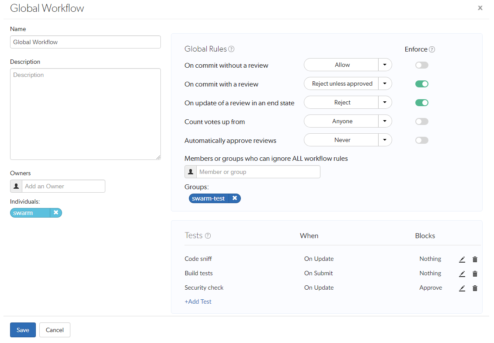

Workflow global rules
This section provides information on how to enable workflow and configure the global workflow rules for Swarm.
If you make a configuration change, Swarm will not use it until the configuration cache has been reloaded, this forces Swarm to use the new configuration. You must be an admin or super user to reload the Swarm config cache. Navigate to the User id dropdown menu, select System Information, click the Cache Info tab, and click the Reload Configuration button.
Workflow prerequisites
For Swarm 2019.2 and later, the workflow feature is enabled by default.
If you are upgrading from an earlier version you will need to update your triggers, see Upgrading Swarm.
The workflow feature requires:
-
Workflow must be enabled, see the workflow system configurable.
-
Your swarm-trigger.conf file must be configured correctly, see Using triggers to push events to Swarm.
-
Your Helix server trigger table must contain the workflow trigger lines, see Using triggers to push events to Swarm.
workflow
From Swarm 2019.2, workflow is enabled by default.
To disable the workflow feature, edit the SWARM_ROOT/data/config.php file and set the enabled configurable to false in the workflow section of the codeblock:
'workflow' => array(
'enabled' => false, // Switches the workflow feature on. Default is true
),
The default value is true.
If you disable the workflow feature in the Swarm config.php file, workflow will not be processed by Swarm but a small overhead is still incurred by the Helix server each time it runs a workflow trigger script. This overhead can be eliminated by commenting out the swarm.enforce change-submit, swarm.strict change-content, and swarm.shelvesub shelve-submit workflow triggers.
Global workflow
- The Global Workflow page can be edited by a Swarm user with super or admin privileges, or users that have been made an owner.
- In earlier versions of Swarm, global workflow rules were set in the Swarm config.php file. From Swarm 2020.1, they are set in the global workflow on the Swarm Workflows page. If you upgrade from an earlier version of Swarm, your global workflow settings are automatically migrated to a workflow called Global Workflow.
-
In earlier versions of Swarm, global tests were set in the Swarm config.php file. From Swarm 2020.1, tests are added to the global workflow on the Swarm Workflows page so that they operate as global tests. If you upgrade from an earlier version of Swarm, your global tests are automatically migrated. Each global test is migrated as follows: the owner is set as the Swarm admin user (not shared), the name is set to the original test name, the description is set to the original test title, and it is added to the Global Workflow.
Global workflow rules enable you apply rules globally if required, ensuring basic company policies are followed by every project. Each rule in the global workflow can be set with Enforce off (default) or Enforce on, this determines how that rule is used by Swarm:
- Enforce off: applies the workflow rule setting to projects and project branches that don't have an associated workflow. If a project or project branch has an associated Swarm workflow, the global rule is ignored.
- Enforce on: applies a minimum workflow rule setting to all projects and project branches. If a project or project branch has an associated workflow, the global rule is merged with the workflow rule and the most restrictive setting is used.
To edit the global workflow rules:
- On the Swarm Workflows page.
- Click Global Workflow to open the settings page:
- Optional: change the name if required, we recommend that you leave it set to Global Workflow if possible for ease of identification.
- Optional: provide a description for the global workflow.
-
Optional: add more owners if required. This field auto-suggests groups, and users within Helix server as you type (up to a combined limit of 20 entries).
Important- The global workflow must have at least one owner.
- If you remove yourself as an owner, you cannot edit this workflow configuration later unless you have super user rights.
-
Global Rules:
Each rule in the global workflow can be set with Enforce off (default) or Enforce on using the Enforce slider next to the rule, this determines how that rule is used by Swarm:
- Enforce off: applies the workflow rule setting to projects and project branches that don't have an associated workflow. If a project or project branch has an associated Swarm workflow, the global rule is ignored.
- Enforce on: applies a minimum workflow rule setting to all projects and project branches. If a project or project branch has an associated workflow, the global rule is merged with the workflow rule and the most restrictive setting is used.
Important- Changes to global workflow rules that are set with Enforce off will change the workflow for projects and project branches that do not have an associated workflow.
- Changes to global workflow rules that are set with Enforce on will change the workflow for all projects and project branches.
On commit without a review:
This rule is applied when a changelist without an associated review is submitted from outside of Swarm.
Select one of the following options:
- Allow: the changelist is not checked, the changelist is submitted without a review.
- Create a review: the changelist is submitted and a review is created automatically for the changelist.
- Reject: the changelist submit is rejected.
TipThe selected rule is also applied when a changelist is submitted with
#reviewin the description.On commit with a review: This rule is applied when:
- A Swarm review is committed.
- A changelist with an associated review is submitted from outside of Swarm.
Select one of the following options:
- Allow: the changelist review state is not checked. The changelist is committed even if its associated review is not approved.
- Reject unless approved: the changelist is only submitted if its associated review is approved and the content of the changelist is identical to the content of the approved review.
TipThe selected rule is also applied when a changelist is submitted with
#review-nnnnn,#replace-nnnnn, or#append-nnnnnin the description (nnnnn= review ID).On update of a review in an end state:
Used to stop review content being automatically changed for reviews that are in specific states. By default, the protected end states are Archived, Rejected, and Approve:Commit. The end states are set by the Swarm administrator
TipWhen a review is in a protected end state, it can still be updated manually by a user from the Swarm UI.
This rule is applied when a changelist is added to a review.
Select one of the following options
- Allow: the review is not checked. The changelist is added to the review no matter what the review state is. This is the default setting.
- Reject: if the review is in one of the states specified in the
end_stateconfigurable:- The Add Change button is disabled for the review.
- The changelist is rejected if it is added outside of Swarm using
#review-nnnnn,#replace-nnnnn, or#append-nnnnnin the description (nnnnn= review ID).
Count votes up from:
By default, all of the up votes on a review are counted for the Minimum up votes value set on the project/branch the review is associated with. Limit the up votes that are counted to just the members of the project the review is associated with by using this rule.
This rule is applied when a user votes on a review.
Select one of the following options:
- Anyone: votes are counted for all reviewers on a review. This is the default setting.
- Members: only the up votes of members of the project the review is associated with are counted for the Minimum up votes set on projects/branches.
TipFor instructions on how to set Minimum up votes for projects and branches, see Project minimum up votes and Branch minimum up votes.
Automatically approve reviews:
By default, reviews must be manually approved. Enable automatic approval of reviews with this rule.
This rule is applied when a user votes on a review, a required reviewer is added to a review, or a required reviewer is made an optional reviewer on a review.
Select one of the following options:
- Never: reviews are not automatically approved. This is the default setting.
- Based on vote count: reviews are automatically approved if:
- There are no down votes on the review.
- There are no moderators on the review. If a review has moderators it cannot be automatically approved.
- All of the Required reviewers on the review have voted up.
- The Minimum up votes on the review has been satisfied for each of the projects and branches the review spans.
- All of the tests configured to block approval have passed.
ImportantModerators prevent the automatic approval of reviews. For more information about moderators, see Moderators.
TipAfter a review has been automatically approved it needs to be manually committed.
- Tests
- Tests are only saved on the workflow when you click the Save button.
- If a review is associated with multiple workflows, all of the tests on all of those workflows are run for the review. If the same test is on more than one of the associated workflows, it is only run once.
- Click in the Tests area.
- Select the test to run from the Tests dropdown list.
- Select when you want the test to run from the When dropdown list. Tip
Review content change is when the files or content of files in a review change. A change to the review description does not trigger a test.
On Demand tests are unaffected by the review content change check.
- On Update the test will run when:
- a review is created.
a review is submitted and the review content has changed compared to the previous review version.
- a review is updated and the review content has changed since the previous review version.
- On Submit the test will run when a pre-commit review is submitted or a post-commit review is created.
- On Demand the test will not run automatically, but you can run it manually from the Tests dialog on the review page.
TipIf the review content has not changed since a test last successfully reported a pass, it will not be re-run when a review is versioned or submitted. If a test is still running or has not updated Swarm with a pass state, it will be re-run, even on a submit.
- Select whether Swarm blocks approval if the test fails from the Blocks dropdown list:
- Nothing if the test fails it will not block approval.
- Approve if the test fails it will prevent the review from being approved.
- Click the Accept button to add the test to the workflow.
- Click the Edit
 button next to the test you want to edit.
button next to the test you want to edit. - The Test, When, and Blocks dropdown lists are displayed for the test.
- Make changes as required.
- Click the Accept button to confirm your changes.
-
Click Save.
NoteThe Save button is disabled if any required fields are empty.
By default, the global workflow is called Global Workflow, but it can be changed. To help you identify the global workflow it is always shown as the first workflow in the list and it has a different background color to the other workflows.

Members or groups who can ignore ALL workflow rules
Optional: add users and groups to enable the users and groups (including any sub-groups) to ignore all of the workflow rules across the entire depot. This field auto-suggests users, and groups within Helix server as you type (up to a combined limit of 20 entries).
Typically, these permissions are given to a small set of trusted users and groups, for example project owners and administrators.
This applies to actions taken in the Swarm UI, the P4D command line, a P4D client, and the Swarm API.
Optional: add tests to the workflow, the tests are run when a review associated with the workflow is either created/updated or submitted. Selected from the When dropdown for the test.
Add a test:
Edit a test on the workflow:
Remove a test from the workflow:
Click the Delete  button next to the test to remove it from the workflow.
button next to the test to remove it from the workflow.
The test is removed immediately, no confirmation is requested. You must save the workflow to complete the test removal.